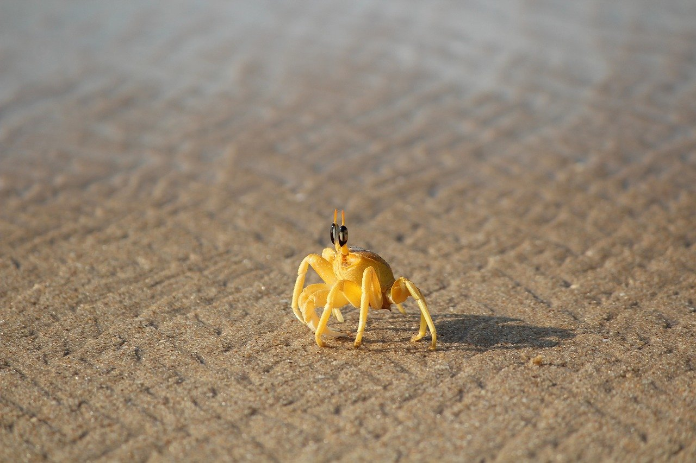

Hello world
Kevin Lamar Kemakanamakamaeokalani Davis
Kevin Lamar Kemakanamakamaeokalani Davis
Kevin Lamar Kemakanamakamaeokalani Davis
Kevin Lamar Kemakanamakamaeokalani Davis
Kevin Lamar Kemakanamakamaeokalani Davis
The ocean is vital to the health of our planet and humanity. Covering over
70% of the Earth's surface, it plays a critical role in regulating climate by absorbing carbon dioxide and heat.
The ocean is a key source of oxygen, producing more than half of the oxygen we breathe through phytoplankton, algae, and other marine plants. Additionally, it supports a diverse array of ecosystems that are home to countless species, many of which are essential for maintaining ecological balance. These ecosystems, such as coral reefs, mangroves, and seagrasses, provide vital services, including coastal protection, nutrient cycling, and habitat for fish and wildlife that many communities depend on for food and livelihoods.
Preserving the ocean and its life is not only crucial
for environmental stability but also for economic and social well-being. Healthy oceans contribute to sustainable fisheries,
tourism, and recreation, which are integral to the economies of many coastal communities. Unfortunately, human activities such as overfishing,
pollution, and climate change pose significant threats to marine ecosystems. By committing to ocean conservation, we ensure the survival of
countless marine species and the resilience of ecosystems that support life on Earth. Protecting the ocean is essential for future generations,
as it helps maintain biodiversity, sustains livelihoods, and fosters a balanced climate, ultimately benefiting all life on the planet.
link text
